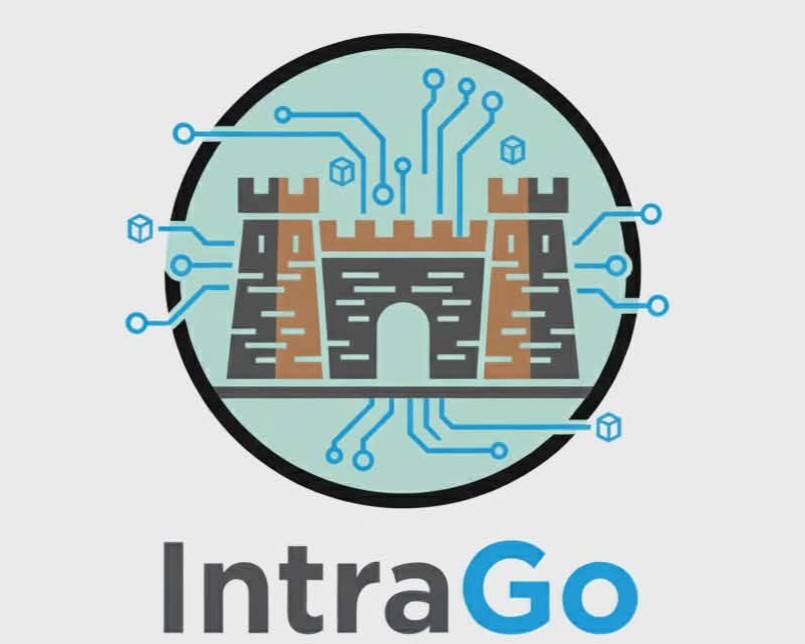
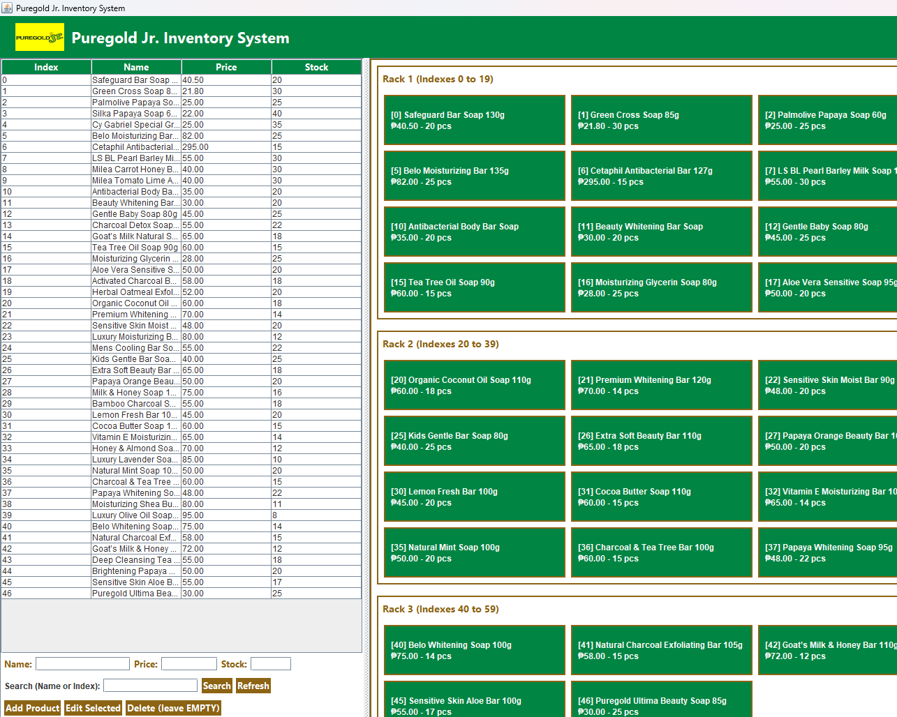

Works

Restaurant POS System
A Java-based POS system that handles orders, billing, and inventory. Designed with a clean UI and efficient workflow for small businesses.
View Project
IntraGo
A Java application that uses graph data structures to determine the nearest location in Intramuros efficiently. It implements pathfinding logic to calculate optimal routes
View Project
Inventory System
A Java-based inventory system designed to track products, manage stock levels, and organize data efficiently. It features a structured interface for adding, updating, and monitoring items.
View Project